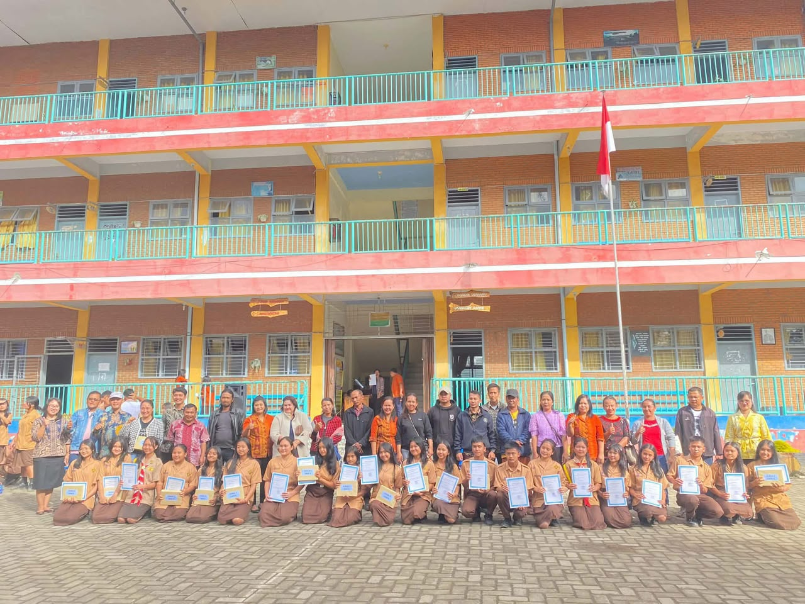
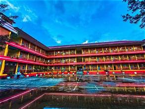
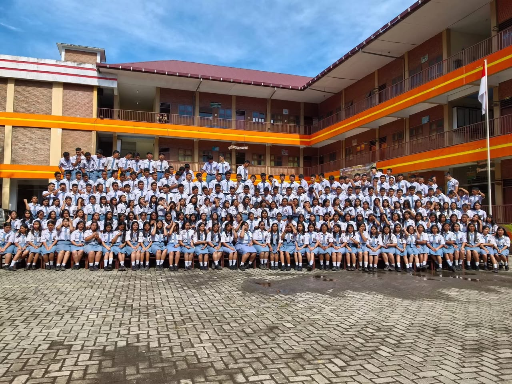

KEGIATAN SEKOLAH
Kegiatan Pembelajaran di Sekolah
Dokumentasi kegiatan belajar mengajar peserta didik SMA Katolik 1 Kabanjahe.
Informasi lebih lanjut →Yayasan Perguruan Katolik Don Bosko
SMA Katolik 1 Kabanjahe berkomitmen memberikan pendidikan berkualitas untuk membentuk generasi yang unggul, beriman, dan berkarakter.
Kenali Sekolah KamiMengenal lebih dekat SMA Katolik 1 Kabanjahe

Kabanjahe, Sumatera Utara
SMA Katolik 1 Kabanjahe merupakan lembaga pendidikan di bawah Yayasan Perguruan Katolik Don Bosko. Sekolah berkomitmen mengembangkan potensi peserta didik melalui pendidikan akademik dan pembentukan karakter.
Menjadi lembaga pendidikan yang menghasilkan peserta didik cerdas, berkarakter, beriman, mandiri, dan berprestasi.
SMA Katolik 1 Kabanjahe
Perguruan Katolik Don Bosko
Kabanjahe, Sumatera Utara
smark1kj@gmail.com
Dokumentasi aktivitas dan informasi sekolah
Memuat berita terbaru...

Dokumentasi kegiatan belajar mengajar peserta didik SMA Katolik 1 Kabanjahe.
Informasi lebih lanjut →Kegiatan pengembangan bakat, minat, kreativitas, dan keterampilan siswa.
Informasi lebih lanjut →
Informasi mengenai pencapaian dan kegiatan pendidikan sekolah.
Informasi lebih lanjut →Informasi pendidikan SMA Katolik 1 Kabanjahe
Kami siap menerima pertanyaan dan informasi dari Anda.
Kabanjahe, Sumatera Utara, Indonesia
Yayasan Perguruan Katolik Don Bosko
Pesan akan disiapkan melalui aplikasi email Anda.